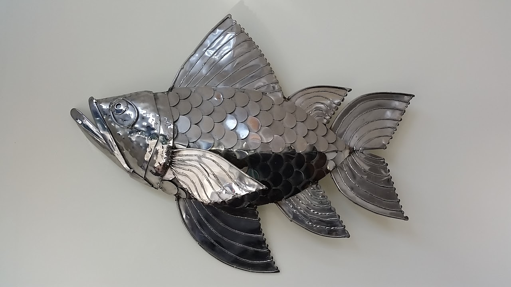
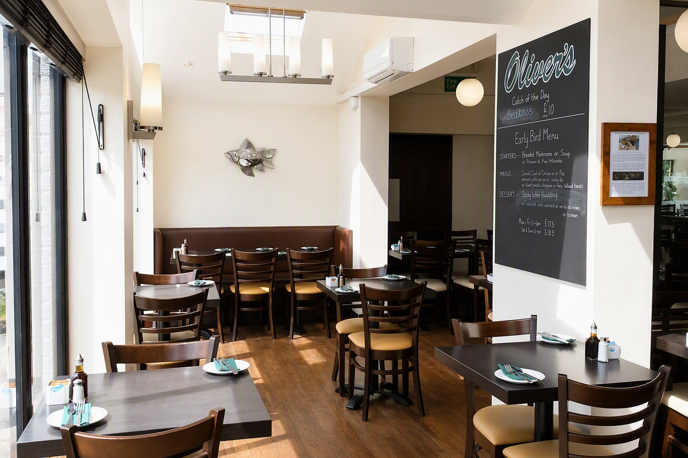
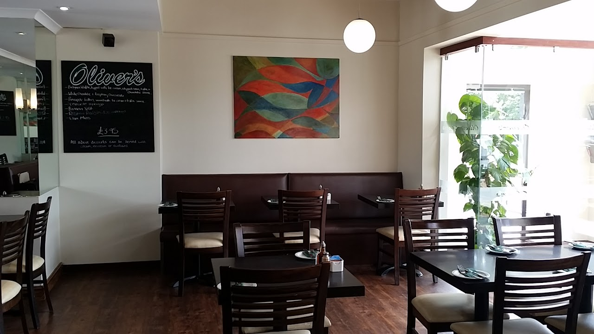

Opening hours
Open every day, except Christmas day, Boxing day and New Year's day
Monday – Sunday 12pm–9pmLast orders at 8pm. Our takeaway closes at 9pm.
Open every day, except Christmas day, Boxing day and New Year's day
Monday – Sunday 12pm–9pmLast orders at 8pm. Our takeaway closes at 9pm.
Our blackboards display the daily changing "Catch of the Day" fish specials.
We offer many of our fish selections either plainly grilled or grilled in seasoned breadcrumbs.




